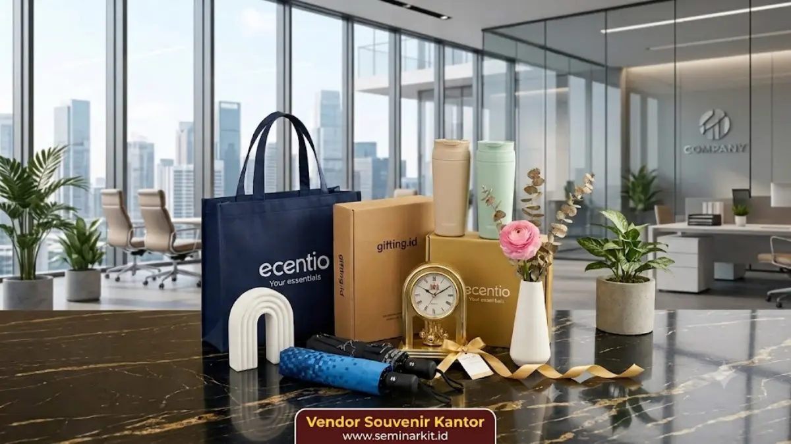

Souvenir kantor untuk acara korporat adalah merchandise bermerek yang dibagikan dalam berbagai momen perusahaan, seperti seminar, gathering, perayaan ulang tahun perusahaan, dan acara penghargaan karyawan.
Setiap jenis acara umumnya membutuhkan jenis souvenir yang berbeda agar sesuai dengan suasana dan tujuan acara tersebut. Pemilihan souvenir yang tepat dapat meningkatkan kesan positif peserta terhadap acara sekaligus memperkuat citra perusahaan penyelenggara.
- Jenis acara korporat menentukan jenis souvenir yang paling sesuai untuk dibagikan.
- Souvenir seminar umumnya bersifat fungsional dan mudah dibawa peserta.
- Souvenir penghargaan karyawan cenderung lebih formal dan bernilai simbolis.
- Souvenir ulang tahun perusahaan sering dikombinasikan dengan elemen perayaan dalam desainnya.
Souvenir Kantor untuk Seminar dan Workshop Perusahaan
Souvenir kantor untuk seminar dan workshop idealnya berupa produk fungsional yang dapat langsung digunakan peserta selama maupun setelah acara berlangsung, seperti notes custom logo, tumbler, atau tote bag berisi perlengkapan seminar.
Produk fungsional cenderung lebih efektif dibandingkan souvenir dekoratif karena langsung memberikan manfaat praktis bagi peserta.
Selain aspek fungsional, souvenir seminar sebaiknya juga mempertimbangkan kepraktisan distribusi dalam jumlah besar, mengingat peserta seminar korporat umumnya terdiri dari puluhan hingga ratusan orang.
Produk dengan ukuran ringkas dan kemasan sederhana namun tetap rapi menjadi pertimbangan penting agar proses distribusi berjalan lancar tanpa mengurangi kesan profesional acara.
Logo perusahaan penyelenggara maupun logo event sponsor umumnya dicetak pada souvenir seminar sebagai bentuk branding sekaligus dokumentasi partisipasi peserta dalam acara tersebut.

Souvenir Kantor untuk Gathering dan Employee Bonding
Souvenir kantor untuk acara gathering perusahaan umumnya dipilih dengan nuansa yang lebih santai dibandingkan souvenir seminar formal, seperti kaos custom logo, topi, atau tumbler dengan desain yang lebih dinamis.
Suasana gathering yang cenderung informal membuat pemilihan souvenir juga dapat lebih fleksibel dari segi warna dan desain.
Souvenir gathering sering kali dirancang dengan mempertimbangkan momen kebersamaan tim, sehingga beberapa perusahaan turut menambahkan elemen tanggal acara atau tema tahunan pada desain souvenir sebagai bentuk dokumentasi kegiatan internal perusahaan.
Souvenir Kantor untuk Penghargaan Karyawan
Souvenir kantor untuk acara penghargaan karyawan umumnya berupa plakat, trofi akrilik, atau produk premium bernilai simbolis tinggi, karena tujuannya adalah mengapresiasi pencapaian individu maupun tim secara formal.
Berbeda dengan souvenir seminar yang bersifat fungsional massal, souvenir penghargaan lebih menekankan aspek personalisasi dan kualitas presentasi produk.
Personalisasi pada souvenir penghargaan karyawan umumnya mencakup nama penerima, jabatan, dan keterangan pencapaian yang dicetak secara khusus pada plakat atau trofi.
Detail personalisasi ini menjadikan setiap souvenir penghargaan unik dan lebih bermakna bagi penerimanya dibandingkan souvenir generik.
Kualitas bahan dan hasil cetak pada souvenir penghargaan karyawan turut memengaruhi kesan acara secara keseluruhan, mengingat momen ini biasanya menjadi sorotan utama dalam agenda acara perusahaan.
Souvenir Kantor untuk Perayaan Ulang Tahun Perusahaan
Souvenir kantor untuk perayaan ulang tahun perusahaan umumnya menggabungkan elemen perayaan dengan identitas merek perusahaan, seperti pencantuman angka tahun perusahaan berdiri atau tagline khusus pada desain souvenir.
Momen ulang tahun perusahaan sering menjadi kesempatan bagi perusahaan untuk menampilkan sisi lebih personal dari identitas mereknya kepada karyawan maupun mitra bisnis.
Jenis souvenir yang umum digunakan pada perayaan ulang tahun perusahaan meliputi hampers berisi produk pilihan, tumbler edisi khusus, hingga merchandise kolektif seperti kalender atau agenda tahunan dengan desain yang disesuaikan tema perayaan tahun tersebut.
Bagaimana Memastikan Souvenir Sesuai dengan Jenis Acara Korporat?
Memastikan souvenir kantor sesuai dengan jenis acara korporat dapat dilakukan dengan mempertimbangkan tujuan acara, jumlah peserta, dan kesan yang ingin dibangun perusahaan melalui acara tersebut.
Acara formal seperti penghargaan karyawan membutuhkan souvenir dengan nilai simbolis tinggi, sementara acara seminar lebih membutuhkan souvenir fungsional yang praktis didistribusikan dalam jumlah besar.
Perencanaan yang matang, termasuk penentuan anggaran dan tenggat waktu produksi, turut memengaruhi kualitas akhir souvenir yang akan dibagikan pada hari acara berlangsung.
Untuk memenuhi kebutuhan souvenir kantor pada berbagai jenis acara korporat perusahaan Anda, tim kami di vendorsouvenirkantor.web.id siap membantu mulai dari konsultasi jenis produk hingga proses produksi sesuai tenggat waktu acara Anda.
Setiap jenis acara korporat memiliki kebutuhan souvenir yang berbeda, mulai dari souvenir fungsional untuk seminar, souvenir santai untuk gathering, hingga souvenir bernilai simbolis untuk penghargaan karyawan dan perayaan ulang tahun perusahaan.
Memahami karakteristik masing-masing acara membantu perusahaan menentukan jenis souvenir yang paling sesuai dan berkesan bagi para penerimanya.
Persiapkan souvenir kantor untuk acara korporat Anda selanjutnya bersama tim kami di vendorsouvenirkantor.web.id dan pastikan setiap momen perusahaan Anda tampil lebih profesional.

Banner promosi: klik gambar untuk langsung terhubung ke WhatsApp tim sales.